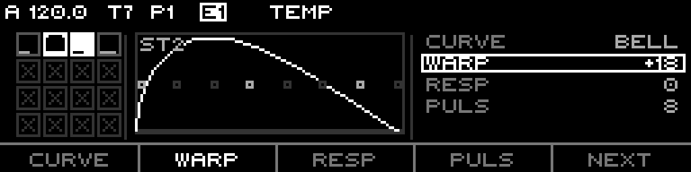
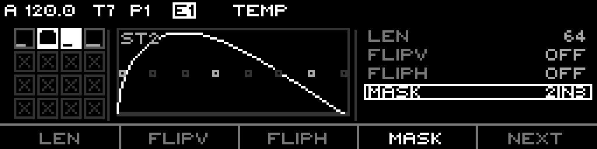
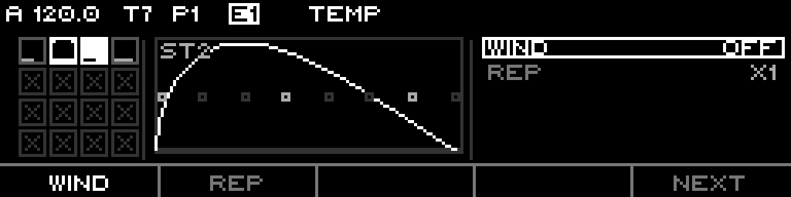
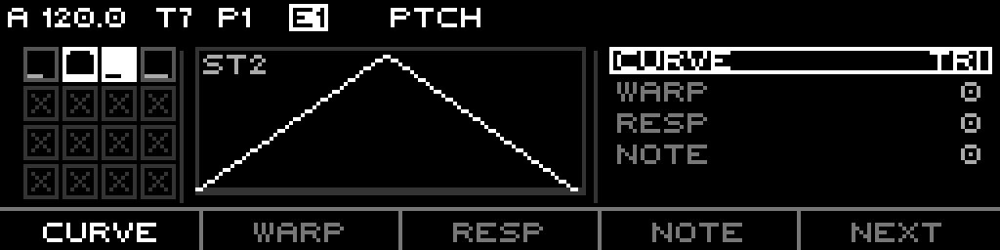
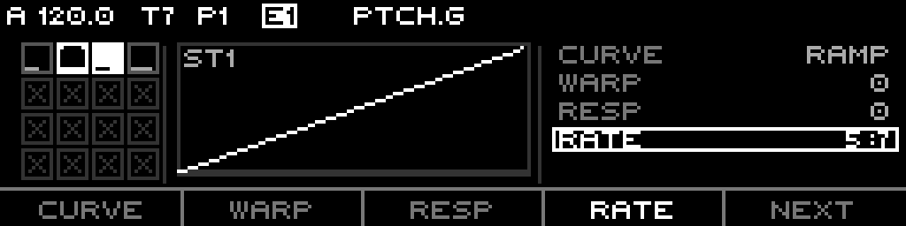
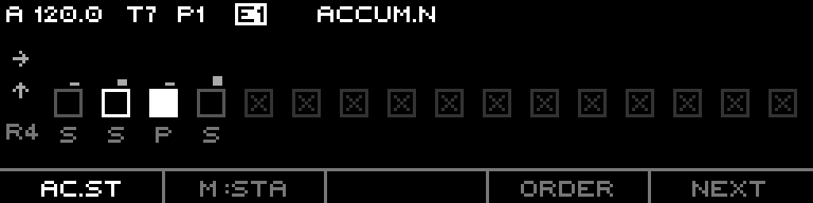
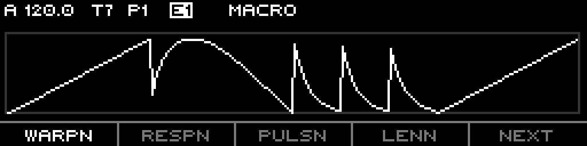

A 16-cell pulse synthesizer. Each cell of a 4×4 grid fires a scheduled burst of gate pulses with an independent temporal shape and pitch shape, walked through a selectable traversal with per-stage accumulators and sequence-wide macros.
The PhaseFlux track is a 16-cell pulse synthesizer. The 16 cells form a 4×4 grid; each cell is a stage that, when its slot comes up in the cycle, fires a scheduled burst of gate pulses. Every stage carries two independent shapes: a temporal shape that decides when the pulses land inside the slot, and a pitch shape that decides what note each pulse plays. Stages are walked in a selectable traversal (a top-down snake plus seven René-mk2 access patterns), drift over time through per-stage note and pulse accumulators, and respond live to sequence-wide macro nudges.
It generates everything itself from the per-stage parameter matrix — there is no source track to sample. One stage with four pulses across a beat is the default; push the curves, warps, windows, repeats and accumulators and the same grid produces evolving polyrhythmic phrases.
Everything here is grounded in the firmware as built — defaults, ranges, enum members, key bindings, and step-grid maps come from the model, engine, and UI code.
A PhaseFlux sequence holds 16 stages laid out as a 4×4 grid. The engine builds a cycle from the in-range, non-skipped stages and walks them slot by slot:
length (in divisor units) sets its slot width. Skipped/out-of-range stages contribute zero (Adaptive) or stay as a silent slot (Fixed). The sum is the cycle length in ticks.pulseCount triggers placed by the temporal shape, each carrying a CV from the pitch shape.The two shapes per stage are orthogonal:
On top of both sit per-stage Accumulators (note + pulse counters that drift the values each cycle) and sequence-wide macros (uniform nudges, global phase, cycle warp).
Every stage stores the same field set. Two axes (temporal, pitch) plus per-stage accumulator wiring. All per-stage edits target the cursor cell, or every cell in an active multi-select.
| Field | Default | Range | Effect |
|---|---|---|---|
Pulse Count (Puls) | 4 (stages 0-3), 0 (4-15) | 0-16 | Pulses fired in the slot. 0 = silent stage |
Length (Len) | 4 | 1-127 | Slot width in divisor units (4 = one beat at 1/16) |
| Curve | Linear | Linear / Bell / Bounce | Temporal density curve (Bounce = ExpDown3x) |
| Warp | 0 | ±64 | PowerBend on pulse position before the curve |
| Response | 0 | ±64 | PowerBend on the curve output |
| FlipV | off | on/off | Mirror the curve value (vertical) |
| FlipH | off | on/off | Reflect the pulse schedule around the slot midpoint |
| Window | Off | Off / Focus70 / Focus50 / Polarize70 / Polarize50 | Drop pulses outside the visible band |
| Repeat | x1 | x1 / x2 / x3 / x5 | Split the slot into N sub-sections, one curve copy each |
| Mask | Off | 8 patterns | Mute selected pulses (LSB = pulse 0) |
| Mask Shift | 0 | 0-7 | Rotate the mask pattern |
| Phase Shift | 0 | 0-7 | Shift all triggers by N×0.125 of the slot |
| Gate Length | 50 | 0-100 | Pulse gate as a percent of the pulse period |
Mask patterns (set bit mutes that pulse): Off, OneInTwo, OneInThree, OneInFour, TwoInThree, TwoInFour, ThreeInFour, OneInEight.
kMinPulseGateTicks = 6): 0 drops the pulse; 1 is an always-audible minimum, floored at 6 ticks; ≥2 scales by percent and drops the pulse if the computed gate is shorter than 6 ticks.| Field | Default | Range | Effect |
|---|---|---|---|
Base Pitch (Note) | 0 | ±63 degrees | Stage's root scale degree |
| Curve | Ramp | Ramp / Bell / Triangle / Bounce | Pitch contour across the pulses (Bounce = ExpDown3x) |
| Warp | 0 | ±64 | PowerBend on phase before the curve |
| Response | 0 | ±64 | PowerBend on the curve output |
| FlipV | off | on/off | Mirror the curve value |
| FlipH | off | on/off | Mirror the phase input |
Range (Span) | One | Half / One / Two / Three | Pitch span: 0.5 / 1 / 2 / 3 octaves |
Direction (Dir) | Up | Up / Down / Bipolar | Apply the curve offset up, down, or centered |
| Window | Off | Off / Focus70 / Focus50 / Polarize70 / Polarize50 | Hold pitch at the nearest visible boundary in hidden bands |
| Repeat | x1 | x1 / x2 / x3 / x5 | Repeat the pitch curve N times across the slot |
Mask Melody (Mask) | 100 | 0-100 | Tonal filter on note centrality; 100 = all pass |
Tilt Melody (Tilt) | 0 | 0-100 | Anti-tonal filter on inverted centrality; 0 = off |
Mask Melody and Tilt Melody form an orthogonal union: a pulse plays if it passes either filter (mask keeps central scale tones, tilt keeps the outliers). Final note = base pitch + accumulator offset + octave + transpose + the direction-applied curve offset, converted to volts through the sequence scale.
| Field | Default | Range | Effect |
|---|---|---|---|
Note Step (Ac.St) | 0 | ±7 (UI), ±15 (storage) | Scale-degree drift applied per trigger |
Pulse Step (Ac.St) | 0 | ±7 | Pulse-count drift applied per trigger |
Note Trigger (Trig) | Stage | Stage / Pulse | Advance the note counter per stage, or per pulse |
Pulse Trigger (Trig) | Stage | Stage / Pulse | Advance the pulse counter per stage, or per pulse |
The step value is the per-stage amount; the scope, order, polarity, reset, and limits that govern how the counter walks are sequence-level (Part 6).
Each in-range non-skipped stage's length (plus the Len Nudge macro) sets its slot's tick width. length × divisor, scaled by clock multiplier, gives the ticks; the cumulative table over the traversal order yields the cycle length. An all-skipped sequence is idle (gate held low, counters frozen).
First Stage / Last Stage restrict the played cycle to stages [first..last] by grid index. Out-of-range stages contribute zero. A single stage loops when first == last.| # | Name | Walk |
|---|---|---|
| 0 | Snake | Top-down boustrophedon (default) |
| 1 | Rows | Bottom-up rows, all left→right (René P1) |
| 2 | SnakeUp | Snake bottom-up (René P2) |
| 3 | Cols | Columns bottom-up, right column first (René P3) |
| 4 | ColSnake | Columns zigzag, down/up alternating (René P4) |
| 5 | Spiral | Outward from bottom-left (René P5) |
| 6 | Inward | Inner-to-outer counter-clockwise (René P6) |
| 7 | Diag | Anti-diagonal scan from bottom-left (René P7) |
GWarp) — ±64 PowerBend on the cycle position, bending where each stage sits without changing total cycle length.Pitch Mode (per sequence) sets where the pitch curve comes from:
Pitch Rate. Stages share one evolving contour instead of carrying their own.Pitch Rate is a P:T ratio index, 17 entries, default 1:1 (index 9, locked). Off-ratios drift the curve across cycles. The full table:
| Idx | Ratio | Idx | Ratio | Idx | Ratio |
|---|---|---|---|---|---|
| 0 | 1:7 | 6 | 7:9 | 12 | 11:9 |
| 1 | 1:5 | 7 | 11:12 | 13 | 9:7 |
| 2 | 1:3 | 8 | 16:17 | 14 | 7:5 |
| 3 | 2:5 | 9 | 1:1 | 15 | 5:3 |
| 4 | 3:5 | 10 | 18:17 | 16 | 9:5 |
| 5 | 5:7 | 11 | 13:12 |
The pitch-phase accumulator advances every tick regardless of mode, so flipping Cell↔Global is seamless — Global picks up wherever the accumulator is.
For each pulse the engine runs two parallel chains, then masks and schedules.
Temporal chain — seed the pulse at index / pulseCount, apply Warp then split by Repeat into a sub-section + local position; drop it if the local position is outside the Window band; run it through the Curve, then Response and FlipV; add the Phase Shift; place it at position × slot ticks. FlipH reflects the whole schedule around the slot midpoint at the end.
Pitch chain — take the pulse's phase (Cell: the pulse position; Global: the free-running pitch phase projected to the trigger time); run Warp → Repeat → Window-hold → FlipH → Curve → Response → FlipV; scale by the range in degrees and apply the direction; add base pitch, accumulator offset, octave, transpose; pass the melody-mask / tilt filter; convert to volts.
Mask gates on the original pulse index (survives reordering). Accepted pulses are sorted by trigger time; overlapping gates merge via gate retrigger. Up to 16 pulses (kMaxPulses) per slot.
Two per-sequence counters drift the output as the cycle repeats: a note counter (degrees) and a pulse counter (pulse-count). Each stage contributes its own step (Part 2); the config below governs the walk.
| Field | Default | Range | Effect |
|---|---|---|---|
| Scope (Mode) | Stage (Local) | Stage / Sequence | Stage = per-cell counter; Sequence = one shared counter |
| Order | Wrap | Wrap / Pendulum / Hold / RTZ | How the counter behaves at its bounds |
| Polarity | Uni | Uni / Bi | Uni: bounds follow the step sign; Bi: bounds span both limits |
| Reset | 0 | 0-15 | Zero the counter every N cycle wraps (0 = never) |
| Pos Limit | note 28 / pulse 16 | 0-255 | Positive bound |
| Neg Limit | note 28 / pulse 16 | 0-255 | Negative bound |
Scope — Local gives each stage its own counter (each cell drifts alone); Track shares counter 0 across all stages (the whole pattern transposes together). Trigger (per stage) picks whether each step lands per completed stage or per fired pulse. The pulse counter clamps on the output (pulse-count clipping is independent of the counter's wrap/pendulum bounds). Reset fires on cycle wrap.
Page+S0 opens the PhaseFlux edit page. The left side is the 4×4 stage grid; the right side is the per-cell scope + parameter list (or a full-width scope for ACCUM / MACRO). One topic SET is active at a time, cycled with Left/Right:
TEMP → PTCH → ACCUM.N → ACCUM.P → MACRO
Within a topic, F1-F4 address parameter slots and F5 = Next cycles the topic's pages. F1-F4 either select a slot for the encoder, or — for binary fields on page 2 — flip directly on press. The encoder edits the selected slot; Shift (or encoder-press) is the coarse/secondary modifier.
LEDs: red = playhead (active cell) or edit cursor; green = cell will fire (not skipped and length > 0); overlap shows yellow. With Page held, the bottom row is masked dark (quick-edit slots reserved).
_currentSet 0, 3 pages)| Page | F1 | F2 | F3 | F4 | F5 |
|---|---|---|---|---|---|
| P0 | Curve | Warp | Resp | Puls | Next |
| P1 | Len | FlipV* | FlipH* | Mask | Next |
| P2 | Wind | Rep | — | — | Next |
* = press-to-flip toggle. Re-pressing F1 Len on P1 arms Len-TR: the encoder transfers length between the cursor cell and the next, conserving the sum (mirrors Indexed DUR-TR).


_currentSet 1)
Cell mode (3 pages):
| Page | F1 | F2 | F3 | F4 | F5 |
|---|---|---|---|---|---|
| P0 | Curve | Warp | Resp | Note | Next |
| P1 | Span | Dir | FlipV* | FlipH* | Next |
| P2 | Wind | Rep | Mask | Tilt | Next |
Global mode (2 pages, header reads PTCH.G):
| Page | F1 | F2 | F3 | F4 | F5 |
|---|---|---|---|---|---|
| P0 | Curve | Warp | Resp | Rate | Next |
| P1 | Note | Span | FlipV* | FlipH* | Next |

In Global mode Curve/Warp/Resp/FlipV/FlipH and Rate edit stage 0 (the master curve); Note and Span still edit the cursor cell.
_currentSet 2 / 3, 2 pages)| Page | F1 | F2 | F3 | F4 | F5 |
|---|---|---|---|---|---|
| P0 | Ac.St | M:Sta / M:Seq | — | Order | Next |
| P1 | Reset | Polar | Trig | — | Next |
F2 on P0 shows the current Accum Mode (Stage/Sequence) but is not editable from here — change it on the sequence list (Part 8). Ac.St and Trig are per-stage (multi-cell aware); Order/Reset/Polar are sequence-level. The full-width strip draws each cell's counter offset with glyphs for Order, Polarity, and Reset.

_currentSet 4, 2 pages)| Page | F1 | F2 | F3 | F4 | F5 |
|---|---|---|---|---|---|
| P0 | WarpN | RespN | PulsN | LenN | Next |
| P1 | Phase | GWarp | Snap | Zero | Next |
P0 nudges are uniform per-cell offsets added to every stage. Snap (press) quantizes each non-skipped stage's length to the nearest binary note value, conserving total length. Zero (press) resets the five magnitude macros (the four nudges + GWarp) to 0; Global Phase is left alone. MACRO draws a full-width scope of all 16 stages stitched along X, live to every macro.

Shake excludes "chassis-feel" fields (length, base pitch, skip) and never sets pulse count to 0. TEMP/PTCH shake the cursor cell; ACCUM shakes non-skipped cells + config; MACRO is sequence-level.
Long-press opens INIT / COPY / PASTE / DUP. INIT opens a sub-menu:
COPY/PASTE move the sequence via the clipboard; DUP clones the current sequence into the next pattern slot and jumps there.
Track-wide params, in display order:
Per-pattern params, in display order: Divisor, Clock Mult, Global Phase, Pitch Mode, Pitch Rate, Traversal, First Stage, Last Stage, Cycle Length, Note Accum Mode, Pulse Accum Mode, Warp Nudge, Resp Nudge, Pulse Nudge, Len Nudge, Cycle Warp, Scale, Root, Scale Rotate, Reset Measure.
| Target | Range | Scope |
|---|---|---|
| Octave | ±10 | track |
| Transpose | ±60 | track |
| Slide Time | 0-100 | track |
| Divisor | 1-768 | sequence |
| Clock Mult | 50-150 | sequence |
| Scale | 0-23 | sequence |
| Root Note | 0-11 | sequence |
| Phase | 0.0-1.0 | sequence |
| Warp Nudge | ±64 | sequence |
| Resp Nudge | ±64 | sequence |
| Len Nudge | ±64 | sequence |
| Cyc Warp | ±64 | sequence |
| Pulse Nudge | ±15 | sequence |
The Sequence list exposes Divisor / Clock Mult / Scale / Root Note as routable rows; the Track list exposes Slide Time / Octave / Transpose. The five macro nudges, Cyc Warp, and Phase are routable through the param table. A/B inlets are not implemented. Per-stage fields and the accumulator configs are not routable.